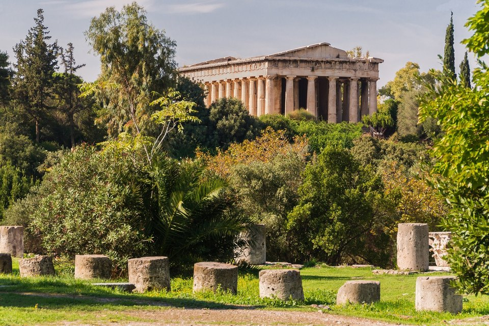

Greece · Athens
Ancient Agora of Athens audio guide
12 stops · 16 min · offline · plays as you arrive
The guide price is €1.99. This button is a placeholder. It does not open checkout and does not take payment. Email hello@getearwise.com.
A 12-stop offline audio guide to Ancient Agora of Athens in Athens, recorded in 10 languages and designed to play as you arrive. It covers the civic square of classical democracy, Stoa of Attalos, and Temple of Hephaestus. Download once; you will not need a signal on the ground.
Stops
- 1
The Panathenaic Way
On the Panathenaic Way, the ancient street that crosses the Agora on a diagonal. This is stop 1 on the route.
Free sample: stop 1
Play0:00 / –:––Read along
This broad street is the Panathenaic Way, the principal thoroughfare of ancient Athens. It led from the Dipylon, the main city gate, up to the Acropolis, a distance of just over a kilometre.
It served as the processional way for the great parade of the Panathenaic festival, held to honour Athena, the patron goddess of the city. Halfway along, the street entered the Agora at its north-west corner and crossed the square on a diagonal.
Except for its steep ascent to the Acropolis, paved in Roman times, it was made of layers of packed gravel. At the north end, excavators found some sixty-six layers, one above another. They reflect a thousand years of use, from the sixth century BC until the sixth century AD.
The street was used not only for the procession. Chariot races were held along it during the festival, and it seems to have served as a running track before a proper stadium was built.
The square around it was the heart of the city: the focus of political, commercial, administrative and social life, and the seat of justice. The ancient writer Euboulos summed it up: "you will find everything sold together in the same place at Athens", from figs and turnips to lawsuits, waterclocks, laws and indictments.
- 2
The Altar of the Twelve Gods
Audio plays at this pin for stop 2 along the walk.
Script and audio included when you buy - 3
The Royal Stoa and the Stoa of Zeus
Here the guide turns to The Royal Stoa and the Stoa of Zeus.
Script and audio included when you buy - 4
Temple of Hephaestus
At the Temple of Hephaestus, on the hill of Kolonos Agoraios to the west of the Agora. This is stop 4 on the route.
Script and audio included when you buy - 5
The Metroon and the Bouleuterion
This stop is given to The Metroon and the Bouleuterion.
Script and audio included when you buy - 6
The Tholos
Stand here for the story of The Tholos.
Script and audio included when you buy - 7
The Monument of the Eponymous Heroes
Look around as stop 7 begins at this pin.
Script and audio included when you buy - 8
The Odeon of Agrippa
At the Odeon of Agrippa, in the northern half of the old Agora square. This is stop 8 on the route.
Script and audio included when you buy - 9
The Church of the Holy Apostles
At the small Byzantine Church of the Holy Apostles. This is stop 9 on the route.
Script and audio included when you buy - 10
The Library of Pantainos
At the Library of Pantainos, partly under and behind the Late Roman wall. This is stop 10 on the route.
Script and audio included when you buy - 11
The Stoa of Attalos
At the Stoa of Attalos, which lines the east side of the Agora square. This is stop 11 on the route.
Script and audio included when you buy - 12
The Agora Museum
Inside the Stoa of Attalos, in the museum galleries. (Indoors: manual play.). This is stop 12 on the route.
Script and audio included when you buy
On the map
All 12 stop pins for this guide are marked. Open map